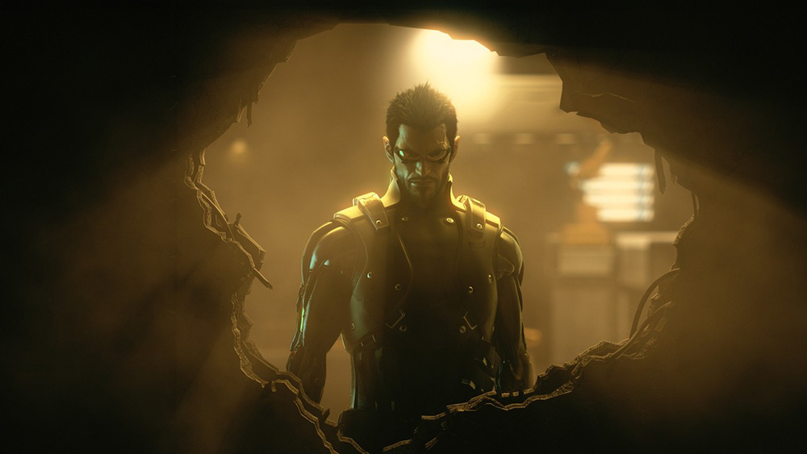
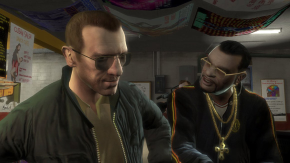

La narration libre
L'article original est écrit par Ernest Adams publié par Gamasutra (août 2010).
L'auteur original n'est en aucun cas reponsable de la précision de cette traduction.

En 1995, j'ai donné une conférence à la Computer Game Developer's Conference au cours de laquelle j'ai identifié plusieurs des problèmes de la narration interactive. J'ai repris ces idées quelques années plus tard dans l'un des articles du Designer's Notebook intitulé « Trois problèmes de la narration interactive » et j'y ai suggéré qu'au lieu d'essayer de raconter des histoires, nous devrions essayer de construire des univers dans lesquels des histoires peuvent se produire — des univers où les joueurs puissent vivre des histoires de leur propre création. L'industrie ne disposait d'aucun terme spécifique pour ceci à l'époque, et j'ai proposé le nom de sandbox storytelling.
Dans le cadre d'un jeu bac à sable, l'idée est de présenter au joueur un grand monde ouvert truffé d'opportunités pour réaliser des interactions. Le joueur n'est pas obligé de suivre une intrigue linéaire comme un rail, mais peut interagir avec le monde dans l'ordre dans lequel il souhaite. Si le monde est correctement construit, une expérience narrative devrait naitre spontanément.
Tout le monde ne pense pas que la narration libre est une bonne idée. L'année qui a suivi cette conférence, Bob Bates en a donné une au CGDC 1996 intitulée « La responsabilité de l'auteur ». L'un des choses qui y a été dite était que « [Les environnements ouverts] sont peut-être amusants à explorer, mais ils ne remplissent les fonctions d'une histoire. Il n'y a ni début, ni milieu, ni fin. Il n'y a pas de pathos, ni de drames humains, ni de vérité supérieure qui se révélerait derrière les combats menés par le joueur ».
Bob proposait d'utiliser à la place une série linéaire d'environnements ouverts — ce que nous appelons maintenant une intrigue multilinéaire ou foldback story, dans laquelle le joueur est contraint de passer par certains points obligatoires de l'intrigue.
Néanmoins, Bob suppose ici que dans un environnement ouvert, le joueur aurait à aller chercher l'intrigue et que tout ce qu'il obtiendrait, c'est une série d'événements déconnectés les uns des autres. Je pense que Bob imaginait que les différents événements étaient liés à des lieux spécifiques et que si le joueur pouvait les déclencher dans n'importe quel ordre, ils ne pourraient pas être reliés entre eux. Je ne suis pas surpris qu'il ait fait cette hypothèse, surtout à l'époque. Nous sommes totalement habitués à définir les intrigues en fonction des lieux physiques où elles se déroulent — à tel point que c'est notre approche par défaut et que tout autre système nous semble étrange. Depuis Zork à Fallout 3 en passant par Half-Life, le mouvement à travers l'espace est synonyme de mouvement à travers l'histoire. Mais pour réaliser une narration dans un jeu bac à sable, nous devons nous débarrasser de cette notion et plutôt réfléchir à comment créer une intrigue qui se déploie — et maintient sa continuité — par d'autres moyens.
Les Grand Theft Auto sont célèbres pour leur environnement bac à sable, mais ils ne mettent pas en place une véritable narration libre. A la place, vous avez droit à l'habituelle chaîne linéaire de mission : vous en complétez une, puis une autre, et ainsi de suite. Il se trouve par ailleurs que les missions se déroulent dans un monde ouvert très vaste et que vous pouvez abandonner la mission et vous mettre à vous balader en semant le chaos autour de vous (ou en conduisant un taxi) si vous en avez envie. D'une certaine façon, c'est ce que Bob désignait comme une série linéaire d'environnement ouvert, sauf qu'au lieu d'une séries d'environnements différents, les Grand Theft Auto vous donnent juste de nouvelles missions dans un nouvel environnement — bien que vous débloquiez de nouvelles zones de temps à autres.

Les Sims offrent d'une certaine façon une narration libre. Le jeu vous propose un monde avec beaucoup d'éléments et de personnages avec des personnalités variées. En tant que joueur, vous pouvez les faire interagir et créer une (sorte de) fil narratif. Dans la mesure où les Sims ne parlent pas anglais, la majeure partie de la narration se fait dans votre tête, mais ce n'est pas grave. Vous pouvez vous faire votre propre film, le doubler et l'uploader sur Youtube.
Mais Les Sims utilisent une modèle d'interaction dans lequel vous n'avez pas d'avatar particulier au sein de l'univers du jeu. Pour élaborer une histoire à partir des Sims, vous devez manipuler plus d'un personnage, plutôt que d'incarner un unique personnage. Ceci fait de vous un créateur plus qu'un participant. Ce n'est pas la façon dont la plupart des jeux narratifs fonctionnent, et je pense que ce n'est pas ce que la plupart des gens attendent d'un jeu narratif.
Les jeux de rôle PC offrent au joueur un vaste univers ouvert, mais plutôt que fournir une unique intrigue, cet univers est plein de quêtes — fondamentalement, des sous-intrigues déconnectées les unes des autres. J'aime les RPG occidentaux, mais il ne m'apportent pas le même ressenti qu'un jeu avec une histoire à intrigue unique. Ils fonctionnent plus comme les douze travaux d'Hercule ou comme n'importe quel ancien héros qui apparaît dans plusieurs histoires déconnectées les unes des autres.
Alors, comment faire pour réaliser un jeu bac à sable où le joueur puisse à la fois se balader comme bon lui semble et faire partie intégrante de l'histoire ? Tout d'abord, comme je l'ai dit, nous devons abandonner l'idée que le joueur ne pourra faire l'expérience de la narration qu'à travers l'exploration. Dans le même temps, le voyage doit aussi être une composante à part entière de l'histoire, car sinon voyager serait juste pénible. Habituellement, les films se débarrassent de ce genre de passages — quelqu'un sort de sa maison le matin, monte dans sa voiture et au plan suivant, il est train de marcher jusqu'à son lieu de travail — à moins que le film ne se focalise spécifiquement sur ce voyage, comme un film de course-poursuite.
Dans les jeux d'aventure ou les RPG classiques, tous les événements de l'intrigue dépendent du joueur : ils ne se produisent pas tant que le joueur ne vient pas les trouver et les déclenche. En utilisant des environnements confinés, on peut s'assurer que le joueur les trouve dans le bon ordre. Le problème d'une intrigue composée uniquement d'événements dépendants du joueur, comme je l'expliquai lors de la conférence, est qu'elle donne l'impression d'être mécanique : le monde entier se contente d'attendre que le joueur fasse quelque chose.
Si vous rendez l'intrigue complètement indépendante du joueur — c'est-à-dire qu'elle continue d'avancer quoi que le joueur fasse, même s'il ne fait rien du tout — alors le joueur a tendance à perdre beaucoup. Il n'est pas là où il le devait, ou bien il n'a pas fait ce qu'il fallait au moment où le climax se produit.
Le problème dans la narration d'un un jeu bac à sable, c'est de construire l'intrigue avec une combinaison d'événements dépendants du joueur et indépendants du joueur. Faîtes avancer l'intrigue en permanence quoi que fasse le joueur pour que l'univers ne semble pas statique, mais pas trop vite pour que le joueur ne se retrouve pas trop en retard et perde (à moins que l'intrigue ne se focalise sur une bombe à retardement). Mettez la pression de façon raisonnable sur le joueur pour qu'il agisse, mais réduisez la pression si le joueur est sur la bonne voie. Dans un jeu bac à sable, ce n'est pas l'exploration qui fait avancer l'intrigue — alors à la place, utilisez une combinaison de l'écoulement du temps (c'est la pression sur le joueur) et d'activités du joueur : rencontrer des gens, résoudre des énigmes, prendre des décisions, surmonter des obstacles. Changer le rythme de temps à autre. Parfois, James Bond explore à son rythme (il est maître de la situation) et parfois, il tente désespérément de fuir les méchants (ce sont eux les maîtres de la situation). Puis il réussit à s'enfuir ou alors il les abat et redevient maître de la situation. Bien sûr, tous les jeux vidéo n'ont pas à mettre une forte pression sur le joueur. Vous pouvez laisser le joueur avoir une expérience très calme si vous voulez.
L'une des question que posent certains designers, c'est : « Et si le joueur se contente de se balader et ne rentre jamais dans l'histoire ? ». La réponse est : cela dépend du type d'expérience que vous voulez qu'il ait. Cela peut être très bien de le laisser se balader tranquillement. J'aimerais beaucoup explorer les paysages des différents Far Cry sans me faire tirer dessus à tout bout de champ. D'un autre côté, si vous voulez que le joueur rentre dans l'histoire, alors vous devez vous demander pourquoi il se contente de se balader. S'il se ballade parce qu'il est perdu ou parce qu'il ne sait pas où aller, c'est de votre faute. Le designer Chris Bateman a écrit un chapitre intitulé « Maintenir le joueur sur la bonne route » dans le livre Game Writing: Narrative Skills for Videogames qu'il a publié. Dans ce chapitre, il parle des techniques « d'entonnoir » : il s'agit d'outils variés pour aider le joueur à trouver « l'épine dorsale » du jeu. Dans un monde ouvert, vous ne pouvez pas utiliser l'environnement spatial pour forcer le joueur à retourner vers l'histoire, mais vous pouvez laisser de nombreux signes et indices ça et là. Voyez le livre en question pour plus d'information.
D'un autre côté, si le joueur se contente de batifoler et que vous voulez qu'il retourne à l'histoire, vous devez faire lui mettre la pression en utilisant des événements indépendants du joueur et de sa localisation dans le jeu. Les maîtres du jeu des jeux de rôle papier connaissent bien ce problème. Si le joueur ne vient pas à l'intrigue, c'est l'intrigue qui ira à eux (NDT : on appelle ça le railroading). S'ils ont été engagés pour se débarrasser d'un parrain local et qu'au lieu de ça, ils se contentent de rester ici et de boire des bières, le dit parrain peut très bien avoir vent de leurs projets et envoyer une bande d'assassins à la taverne pour se débarrasser de l'expédition avant même qu'elle ait commencé. Lors du combat qui s'ensuit, la taverne prend feu. Même si l'équipe survit, elle ne pourra plus continuer à boire ici.
Une autre question que les gens posent souvent : « Dans un monde ouvert, comment empêcher que le joueur voit trop dès le début du jeu des éléments qu'il n'est supposé voir que plus tard ? » Cette question est enraciné dans l'hypothèse qu'une histoire a besoin d'être physiquement présente dès le début au sein d'un monde statique — comme il est en généralement dans les jeux d'aventure et les RPG occidentaux, où l'histoire correspond aux lieux. Mais nous ne faisons pas correspondre l'histoire aux lieux, mais au rythme et à l'activité du joueur. La réponse est simple : ne faîtes pas apparaître un objet dans l'univers du jeu tant qu'il n'y en a pas besoin. Dans les Grand Theft Auto, on ne peut pas détruire une certaine voiture à la mission 1 parce qu'elle sera nécessaire à la mission 3, tout simplement parce qu'elle n'est pas dans l'univers du jeu à la mission 1. Vous ne voulez évidemment pas faire surgir des voitures de nulle part juste devant les yeux du joueur, mais vous pouvez faire une sortir une voiture d'un garage fermé auparavant. Le joueur ne peut pas être à plus de deux endroits à la fois, vous pouvez donc faire plein de choses dans son dos.
Alors, quel genre d'histoire pouvons nous raconter dans des mondes ouverts que le joueur peut explorer dans n'importe quel ordre et dans lesquels le voyage est une facette à part entière de l'expérience ? Et bien, en voici une série :
- Trouver le trésor enfoui. C'est un type de jeu où l'urgence est faible, puisque le trésor n'ira nulle part. Le joueur se ballade dans la ville pour récupérer et assembler des indices. Il n'est pas nécessaire de trouver les indices dans le bon ordre : il peut s'agir des parties disséminées d'une carte au trésor.
- Trouver le trésor enfoui avant que quelqu'un d'autre ne le fasse. Même histoire, mais il y a déjà plus de pression sur le joueur. Vous pouvez donner à cette histoire la forme d'une simple course ou vous pouvez faire monter et retomber la pression en faisant en sorte que l'équipe ennemie essaye de saboter les tentatives du joueur. S'ils y arrivent, le joueur subit encore plus de pression ; si c'est le joueur qui joue les saboteurs, la pression redescend (faites néanmoins attention à ne pas créer une trop forte rétroaction positive).
- Trouver une bombe à retardement. Évidemment, c'est là qu'il y a le plus de pression et c'est assez difficile à développer dans un univers ouvert, mais pas impossible. Une façon de donner un peu plus de contrôle au joueur sur le rythme de l'aventure est d'accorder à son avatar une super-vitesse en quantité limitée, comme Superman, Flash ou Neo dans Matrix. Le joueur peut utiliser ce pouvoir pour essayer de gagner un peu temps.
- Trouver des gens plutôt que des objets. Bien sûr, c'est tout de suite beaucoup plus compliqué vu que les gens se déplacent. Le joueur peut incarner un chasseur de primes à la poursuite de fugitifs, un détective à la recherche d'une personne disparue, un membre des services de contre-espionnage qui traque un agent double, etc.
- Une enquête de police. On en revient à la vieille série des Police Quest de Sierra On-Line. Afin de monter un dossier en béton, la police passe beaucoup de temps à se déplacer pour rendre visite aux témoins, questionner les proches des suspects et rechercher des preuves matérielles. Certaines preuves peuvent être trouvées dans n'importe quel ordre, alors que d'autres n'apparaissent qu'en suivant une certaine succession d'indices. Vous aurez peut-être besoin de restreindre la taille de votre ville, car bien que le voyage fasse partie intégrante du métier, ce n'est pas follement palpitant. Vous pourriez épicer ça en laissant les policiers gérer la délinquance et repérer les témoins ou les suspects sur leur lieu de travail. Afin de baisser la pression, laissez le joueur mener son enquête alors qu'un suspect est déjà arrêté. Pour faire remonter la pression, laissez le s'échapper.
- Infiltrer une large zone depuis n'importe quel endroit. Trop de shooters se contentent de placer le joueur sur des rails. C'est moins coûteux à développer, mais c'est aussi moins intéressant pour le joueur. Dans l'actuelle guerre en Afghanistan, les alliés de l'OTAN contrôlent l'espace aérien et disposent d'hélicoptères, de façon à pouvoir déposer les troupes n'importe où hors des zones de combat et à les laisser se déplacer comme ils l'entendent. La planification des missions implique un examen minutieux de photographies aériennes afin de choisir une tactique d'approche.
- S'échapper d'un territoire hostile. Lors de mes ateliers de game design, je donne souvent comme défi à l'une des équipes de faire un jeu sur l'Underground Railroad, le réseau souterrain utilisé par les abolitionnistes avant la guerre de Sécession pour aider les esclaves à s'échapper. Certaines de ces routes sont en réalité longues de plusieurs centaines de kilomètres et donc inadaptées pour un jeu, mais vous avez saisi l'idée.
- La contrebande, ce n'est pas juste s'infiltrer ou s'échapper, mais faire les deux — et le plus souvent avec un chargement peu orthodoxe. Durant les longues, longues guerres entre l'Angleterre et la France aux dix-huitième et dix-neuvième siècles, le commerce entre les deux nations était techniquement interrompu. Néanmoins, on trouvait encore une grande quantité d'eau-de-vie en Grande-Bretagne. Les littoraux des deux nations offraient de nombreuses entrées où un bateau de guerre ne pouvait pas rentrer, et les contrebandiers les connaissaient très bien.
- Comme la police, les reporters voyagent beaucoup, souvent sous la pression d'une échéance, afin de récolter des informations. Sans oublier les espions.
- Les chasseurs ont une tendance naturelle à explorer l'univers. La chasse ne permet pas d'ordinaire de construire une véritable histoire à moins que quelque chose d'inhabituel ne se produise, mais parfois cela arrive. Je me rappelle de deux histoires que j'avais lues quand j'étais petit où de riches (et méchants) chasseurs nourrissaient une passion secrète pour la chasse à l'homme — plus précisément, les guides qu'ils engageaient.
- Démanteler un réseau criminel. Les tentacules du professeur Moriarty sont partout. Quelque soit l'endroit de Londres où se rend Sherlock Holmes, il y découvre systématiquement des traces des agissements sinistres de Moriarty. Mais où se trouvent les véritables bras droits de Moriarty, où se trouve son quartier général et où se trouve-t-il lui-même ?
- Résistance. Une autre idée de jeu que je propose dans mes ateliers consiste à concevoir un jeu sur un mouvement de résistance dans un pays occupé. Ils ne sont pas autorisés à faire de shooter : le jeu doit consister à saboter et à pourrir la vie de l'occupant sans se faire prendre. Ceci aussi peut être développé sur un grand espace de jeu, où les soldats de l'armée d'occupation sont constamment à la recherches des combattants de la résistance et maintiennent le joueur sous pression.
Il y a plein d'autres sortes de métiers ou de loisirs qui nécessitent de voyager : pompiers, électriciens, chasseurs de tornades, critiques de restaurants… Tous ne conviennent pas nécessairement à un jeu vidéo, mais il suffit juste d'un peu d'imagination. Je suis sûr que vous pouvez en trouver d'autres.
Pour donner une dimension narrative à une expérience ludique, vous devez éviter de faire intervenir des événements sans lien entre eux de façon trop aléatoire ou trop répétitive (à ce sujet, voir mon article « Innovations dans la dramaturgie des jeux et des histoires » pour plus d'information). Si vous lisez un thriller qui se passe pendant la Deuxième Guerre mondiale, il ne s'agit pas juste de voir des légions de Nazis tous identiques se faire massacrer : chaque situation doit être unique. Ceci signifie que votre bac à sable doit contenir des éléments très variés, et non pas la simple répétition d'un même événement. Il s'agit probablement du plus fort argument en défaveur d'une narration libre : c'est extrêmement coûteux à développer et nécessite beaucoup de travail. Mais à la différence des jeux linéaires, si vous concevez votre univers avec suffisamment de soin, le jeu pourra être refait un grand nombre de fois. Différents parcours dans l'univers du jeu offriront des expériences de jeu différentes. Il n'est pas nécessaire qu'ils proposent les mêmes objectifs ou la même fin.
Pendant des centaines d'années, la plupart des habitants de Rome ont soutenu l'une des quatre équipes qui participaient aux courses de char. Les conducteurs portaient des vêtements de couleur de façon à ce que les gens puisse les distinguer et les différentes équipes étaient appelées les Rouges, les Blancs, les Bleus et les Verts. Supposons que notre joueur se retrouve tout à coup dans Rome. Il peut rejoindre n'importe lequel des groupes de supporters, de la même façon que dans n'importe quel sport d'équipe aujourd'hui, mais à une différence près : les différents groupes provoquaient souvent des émeutes et se livraient à des combats sanglants dans les rues. Ce qui signifie en pratique qu'un PNJ qui appartient au groupe de supporters que le joueur choisit devient un allié, mais que si le joueur recommence une partie et choisit un autre groupe, ce même PNJ devient alors un ennemi. Pas besoin d'écrire deux histoires ou de concevoir deux personnages : le drame, le conflit émergent naturellement de la situation.
Pour faire court, je pense qu'une narration libre est à la fois possible et amusante. Vous aurez besoin de remplir autant que possible votre bac à sable de façon à proposer autant d'opportunités dramatiques que possible (de nombreux jeux de type bac à sable semblent vides et stériles) et vous devrez décider quelle pression faire peser sur le joueur et comment. Ceci peut faire intervenir des éléments de l'intrigue qui dépendent du temps mais pas du joueur, afin d'obliger celui-ci à aller de l'avant. L'environnement en lui-même est aussi crucial : ce doit être un lieu où le joueur apprécie d'être, parce qu'il va y passer beaucoup de temps.
Il y a un film noir célèbre intitulé La Cité sans voiles qui a été par la suite adapté en série télévisée. A la fin du film et de chaque épisode de la série, on entendait le narrateur dire : « Il y a huit millions d'histoires dans la Cité sans voiles. Ceci en était une. ». Essayez de concevoir votre propre Cité sans voiles et de voir combien d'histoires vous pouvez y créer.
Ajouter un commentaire
Commentaires

Aah, c'est un peu décevant. Il parle de quelque chose qui semble très important pour raconter une histoire dans un monde libre — la réintroduction du temps, qui permet des conséquences non mécaniques à différents termes et évite de figer l'univers (un gros défaut de Dragon Age Origin par exemple, qui flinguait l’implication du joueur) — mais il ne développe pas précisément cet aspect.
Les idées de situation qu'il propose sont intéressantes et efficaces, mais elles ont été exploitées ces dernières années.